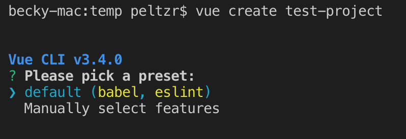

Project: Bootstrap an App
To practice with making an application using the Vue-CLI tool, let's bootstrap an app that we can work with in sections 5 (Debugging the App) and 6 (Deploying the App) to practice working with the project skeletons we can create.
Check for Vue-CLI
If we have Vue-CLI installed properly, then we can run the command vue --version from anywhere on our command line and see the version of the Vue-CLI that we have installed. We should see a number at or above 3.4. If we see an error (something about the vue command not existing), then we should install Vue-CLI by running this command:
npm install -g @vue/cli
Bootstrap the Application
Once we have Vue-CLI properly installed, we can bootstrap our project skeleton. This will create all the files we need to get started writing our application. Create a new app using the webpack template:
vue create test-project
Answer the questions like we see in the screenshot below:

The results of the vue create command.
Once the project skeleton is available, cd into the directory where your project was created.
Start the Dev Server
Once the installation is complete, we can test the project by running:
npm run serve
We should see the development server start up. You can CMD (Mac)-click or CTRL (Windows)-click to open the browser.
Default screen from Webpack project template
If we see a screen that looks like the one above, then we have successfully installed our dependencies and our project is up and running. Now that we have a working project, we can begin to explore some of the parts of the application and see how they work together. The next steps are meant to expose us to different aspects of the software, but rest assured that we will cover these concepts and techniques in more depth in future sections.
Modify HelloWorld
In the default application, there are two Components at play: App and HelloWorld. In order to experiment with the application, we will modify the HelloWorld component. Open the file src/components/HelloWorld.vue and look at the parts. Each .vue file is broken into three main areas: The template, the scripts, and the styles. These are denoted by corresponding tags.
The Template
Let's modify the template code to reflect our own content. Here is the original template code from src/components/HelloWorld.vue:
<template>
<div class="hello">
<h1>{{ msg }}</h1>
<p>
For a guide and recipes on how to configure / customize this project,<br>
check out the
<a href="https://cli.vuejs.org" target="_blank" rel="noopener">vue-cli documentation</a>.
</p>
<h3>Installed CLI Plugins</h3>
<ul>
<li><a href="https://github.com/vuejs/vue-cli/tree/dev/packages/%40vue/cli-plugin-babel" target="_blank" rel="noopener">babel</a></li>
<li><a href="https://github.com/vuejs/vue-cli/tree/dev/packages/%40vue/cli-plugin-eslint" target="_blank" rel="noopener">eslint</a></li>
</ul>
<h3>Essential Links</h3>
<ul>
<li><a href="https://vuejs.org" target="_blank" rel="noopener">Core Docs</a></li>
<li><a href="https://forum.vuejs.org" target="_blank" rel="noopener">Forum</a></li>
<li><a href="https://chat.vuejs.org" target="_blank" rel="noopener">Community Chat</a></li>
<li><a href="https://twitter.com/vuejs" target="_blank" rel="noopener">Twitter</a></li>
<li><a href="https://news.vuejs.org" target="_blank" rel="noopener">News</a></li>
</ul>
<h3>Ecosystem</h3>
<ul>
<li><a href="https://router.vuejs.org" target="_blank" rel="noopener">vue-router</a></li>
<li><a href="https://vuex.vuejs.org" target="_blank" rel="noopener">vuex</a></li>
<li><a href="https://github.com/vuejs/vue-devtools#vue-devtools" target="_blank" rel="noopener">vue-devtools</a></li>
<li><a href="https://vue-loader.vuejs.org" target="_blank" rel="noopener">vue-loader</a></li>
<li><a href="https://github.com/vuejs/awesome-vue" target="_blank" rel="noopener">awesome-vue</a></li>
</ul>
</div>
</template>
We can see from the page in the browser that this code is creating most of the content on the page. Let's alter that content:
<template>
<div class="hello">
<h1>{{ msg }}</h1>
<h2>2 Things that are difficult in JavaScript</h2>
<ol>
<li>naming things</li>
<li>recursion</li>
<li>off-by-one errors</li>
</ol>
</div>
</template>
These changes result in the following changes in the browser:
After changes to the template
Vue.js component templates can have any HTML in them. We can create whatever structures we need, and they can even include other component tags (as with the src/App.vue file, which uses the HelloWorld component in its template). Any HTML that shows up between the <template> tags will be inserted into the app when this component is executed.
The Styles
Inside each Vue.js component is also a style block, defined by the <style> tags. We can see in the screenshot above that the list items are not numbered and they are laid out horizontally. Let's replace the numbers and make them go vertical again.
Here is the original code:
<style scoped>
h3 {
margin: 40px 0 0;
}
ul {
list-style-type: none;
padding: 0;
}
li {
display: inline-block;
margin: 0 10px;
}
a {
color: #42b983;
}
</style>
The scoped attribute on the <style> tag insures that these styles will not apply to anything outside of the component itself. This is very handy on large projects where overlapping styles can be problematic. Because of this tight scoping, we can approach each component on its own terms, name the parts of the component in a way that makes sense, and generally pursue a more modular approach to styles.
In order to change the list the way we want, let's make these changes:
<style scoped>
h1, h2 {
font-weight: normal;
}
ol {
list-style-type: decimal;
width: 40%;
margin: auto;
}
li {
display: list-item;
margin: 0 10px;
}
a {
color: #42b983;
}
</style>
There is nothing special about these styles, but it's interesting to note that if we inspect our styles in our developer tools, we can see how the styles are scoped to the specific component using the data attribute and attribute selectors to implement scoping :
Viewing the scoped styles in developer tools
By using the attribute selector these style definitions are sure to never apply to any other elements on the page. So if we write a style for p or div or ul it will only apply to those elements when they show up inside this specific component template.
Here is what our page looks like after we make these style changes:
The list after style changes
These are not the most amazing styles, but hopefully they help bring how things work into focus.
The Logic
The last part of the component that we have to explore is the logic itself. For the most part, this logic is pretty simple when it is generated in the project skeleton. The script tags in the default HelloWorld component contain the following code:
<script>
export default {
name: 'HelloWorld',
props: {
msg: String
}
}
</script>
props
This logic does not do too much except define the props function with an object that contains the msg property. The props object is what gets revealed to the template context for processing.
data
We can add a name property to this component using the data function. The data function must return an object which can contain properties (key:value pairs).
Any property of the data object is accessible as a variable inside the template. The name property can be added to the HelloWorld component template to create the content of the <h3> tag:
<script>
export default {
name: 'HelloWorld',
props: {
msg: String
},
data() {
return {
name: 'Shawn'
}
}
}
</script>
Then add an <h3> header to the template.
<template>
<div class="hello">
<h1>{{ msg }}</h1>
<h2>2 Things that are difficult in JavaScript</h2>
<h3>{{ name }}</h3>
<ol>
<li>naming things</li>
<li>recursion</li>
<li>off-by-one errors</li>
</ol>
</div>
</template>
Notice how we use the double curly braces ({{ variableName }})to output the value of a variable in a template. This is a common convention among templating languages, especially in JavaScript frameworks.
We can change the name by altering the definition of the name property in the script. Replace <put your name here> with your own name.
<script>
export default {
name: 'hello',
props: {
msg: String
},
data () {
return {
name: '<put your name here>'
}
}
}
</script>
Once we have made that change to the data being piped into our application, we can see the change in the browser:
Altered H1 content
We can even add additional data to the object and then refer to those variables in our template. First, we update the script:
<script>
export default {
name: 'hello',
props: {
msg: String
},
data () {
return {
name: 'Becky',
num1: 42,
num2: 78
}
}
}
</script>
Then we update the template by asking about multiplying 2 numbers:
<template>
<div class="hello">
<h1>{{ msg }}</h1>
<p>What is {{ num1 }} times {{ num2 }}?</p>
<h2>2 Things that are difficult in JavaScript</h2>
<h3>{{ name }}</h3>
<ol>
<li>naming things</li>
<li>recursion</li>
<li>off-by-one errors</li>
</ol>
</div>
</template>
This results in the following display in the browser:
New variable in the template
Of course, now that we have those new variables in the template, we can try doing even more.
Event Handling
Let's finish out exploring this application by going the extra mile and adding a button to calculate 42 times 78. To do this, we will define an event listener on a button. We will do that in the template. Modify your template code to match this:
<p>What is {{ num1 }} times {{ num2 }}?<span v-if="product">{{ product }}</span></p>
<button v-on:click="calculateProduct">Calculate</button>
We have used a couple of new things here. First, we have added a <button> element to the template. This button uses the v-on directive to define a click event handler. There are many other events we could handle, but we will begin with this simple click. The v-on directive then specifies the name of the method that will be executed when this event is detected. So when the user clicks the button, the calculateProduct method will be executed.
We have also added a <span> tag that contains the "product" (the result of multiplying 42 times 78). The <span> contains the v-if directive, which is a conditional statement. If the v-if evaluates to true, then the <span> and its contents are shown. If not, then the <span> and its contents are hidden. This will allow us to not show anything until the answer is populated by our application.
Now that we've added that code to the template, we must update the script logic. Here is the updated script logic:
<script>
export default {
name: 'hello',
props: {
msg: String
},
data () {
return {
name: 'Becky',
num1: 42,
num2: 78,
product: null
}
},
methods: {
calculateProduct: function(){
this.product = this.num1 * this.num2;
}
}
}
</script>
As we can see, we have added another property to the data object for product. This will allow us to refer to that value in our templates and our logic. We will initialize it to null since that will evaluate to a "false" in the v-if conditional.
We have also added another property called methods to our component definition. The methods property contains an object that is populated by named methods. These methods can be executed from within component logic or templates. In this case, we are defining a method called calculateProduct, which multiplies the num1 and num2 values together. Note that within methods we use the this.variableName syntax similar to the syntax used in ES6 Class methods.
Once we put this script in place, we can try our page in the browser and see the result:
Calculation performed
We can see that the calculation has been successfully performed in the screenshot. We should be able to see no product when the page loads, and then have the product populated when we click the button. If all of this is working then we have successfully altered our first Vue.js project skeleton, and we are ready to move on to learn methods for debugging and deploying our apps.
Changes Repository
If you need to look at a full set of code to see how all the changes described above can go together, please review this project repository on Github.